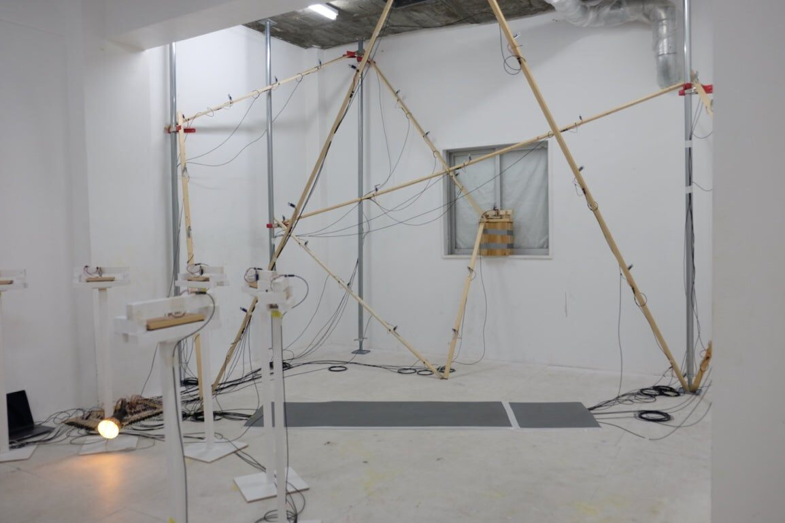
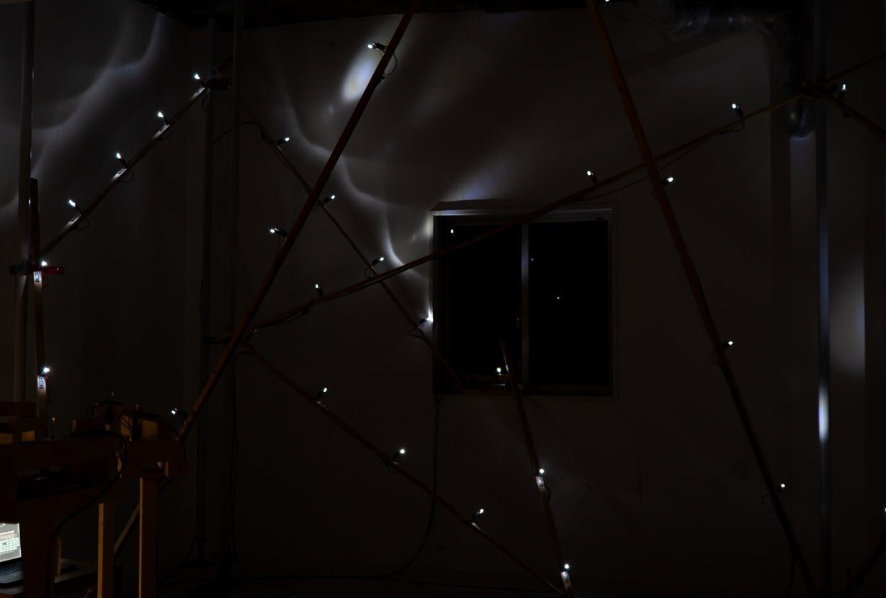
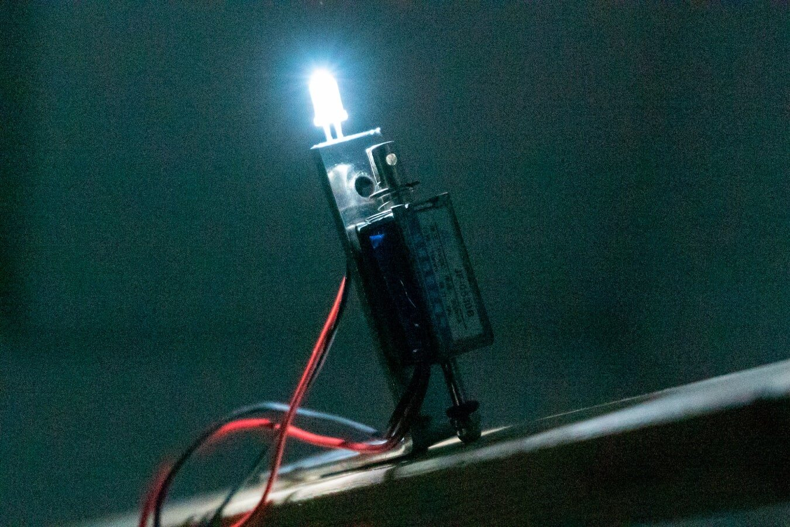

A new music machine for recognizing imaginary motions
Abstract
This work is a kind of solenoid music machine, but its size is large and it is deployed in the entire space of the room. In addition, one of its features the visual effect of LEDs. The LEDs are connected in parallel with the solenoids and blink at the same time as the solenoids emit a striking sound.
As for the composition in time, it is very simple. It is just a series of sound and light events that follow the physical and spatial configuration of the lumber. This gives us the feeling that something is moving, that there is an imaginary moving object.
Project Description
“Rhythm space” is a title of Kanji Kuwahara’s sound installation work series.
Units consisting of a solenoid and an LED is attached to objects placed in the space. The electric current flowing between the two causes the LED to emit light, and at the same time, the solenoid physically strikes the object, causing it to emit sound. The cognitive “point” thus created move in a way that draws a “line” that forms a form, evoking an imaginary moving object for the viewer.
This work is based on two main ideas: aesthetic rhythm theory and music machines.
Aesthetic rhythm theory is an aesthetic discipline (I think) that originated from the thesis “La nature du rythme” (1923) by Ludwig Klages. The concept and sense of rhythm is not limited to music but can be found in many other phenomena; in addition to the arts of time, such as poetry, film and theater, the arts of space, such as painting, architecture and sculpture, and even in the realms of general life, sociology and economics[1]. The work of aesthetic rhythm theory is to explore a framework for comprehensively talking about such the ubiquitous notion of rhythm. Kuwahara is attempting to give a new definition to the concept of rhythm through the reseaech conducted by Gisèle Brelet, Masakazu Yamazaki and others. This work “Rhythm space” expresses such reserch in the most appropriate way.
Music machines, as represented by Music boxes and Piano player, are considered to be one of the sidelines in the history of music. In his college thesis, Kuwahara took a look at the history of music machines and discovered the problems in modern music machines. The problem is that the value of modern music machines lies more in the ontological point that they are elaborated machines rather than musical expression, or that they produce live sound unlike speaker music. With “Rhythm space”, Kuwahara proposes a new value for music machines by introducing spatiality and visuality to them. This value is based on the aesthetic rhythm theory and the idea of multi-channel acoustics, and is a device that realizes free mobility.


Installation view of Rhythm space #11(front side) and #12 (back side) in bright situation.


Installation view of Rhythm space #12 by long time exposure.
Installation Notes
“Rhythm space #12” consists of 10 timbers, 39 solenoid units, cables and an Arduino.
According to a time sequence controlled by Max, events are triggered that emit sound and light as a line is drawn along the timbers. The time structure was designed to represent the rhythm conceptually rather than musically. So, from a musical composition perspective, that structure of this work is quite simple.
Referring to the programming in Max, it consists of only basic objects. [metro] Emits a command every specified number of milliseconds. [counter] Each time it receives a command, it counts up the integers in the given numerical range and order. Each solenoid unit is assigned an order number, and the unit is driven according to the number counted by [counter]. Therefore, the compositional act in this work is just deciding the order, speed, and direction - which is probably a simple thing that anyone can do. In other words, once the Max, Arduino, and electronic circuits are connected, all you have to do is think about how you want to move in the space, and that is i.e., composing.
The placement of the timbers is imorevised in the form of a three-dimensionally distorted circle.


Solenoid unit.

Screenshot of Max programming for Rhythm space #11 and #12.
Installation Requirements
It is desirable to have a space for the following conditions.
Width: over 4m, depth: over 2m, height: over 2.5m and under 4m.
A hard floor and ceiling that can build columns (poles).
Near darkroom conditions.
And a power supply is needed to charge the PC and for the solenoid units that runs on 12V-400mA.
It takes about three days to install.
Table 1
Table I. Equipment Requirements | |
|---|---|
Timber *10 | Procure locally |
Solenoids, LEDs, Arduino, cables and electronic circuits | Self |
Power supply | Organization |
Source: This is a table source note. Note: This is a table footnote | |
Media
Digest video of Rhythm space #12.
Acknowledgments
The authors would like to thank Prof. Suguru Goto.
This work was supported by Fuka Nagata, Shun Moriyama and Moe Mukaitani.
Compliance with Ethical Standards
No special notes.
Footnotes
See e.g. http://www.bibtex.org/.
Citations
Shoichi Yamashita: “Temps, corps et rythme dans l’esthètique musicale de Gisèle Brelet”, 2012.
↩